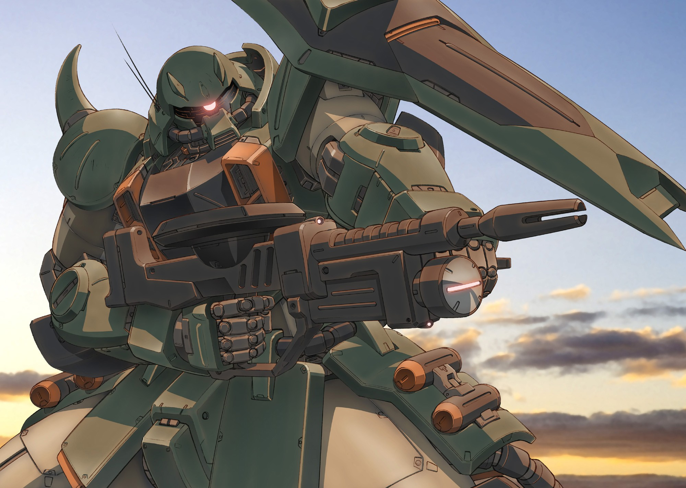
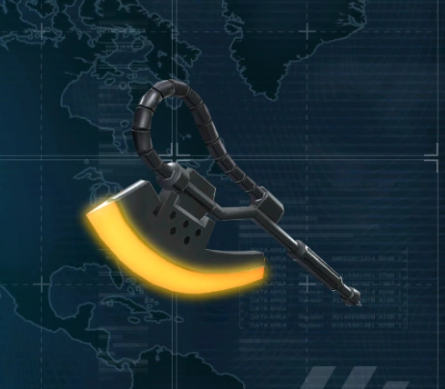

Información del Personaje
Origen: Colonia Espacial (Principado de Zeon)
Altura: 17.5 metros
Peso (Sin Armamento y combustible): 56.2 toneladas
Peso (En total): 73.3 toneladas
Alianza: AMENAZA HOSTIL MECÁNICA CLASE BETA
Historia
Los Mobile Suits Zaku, particularmente el modelo MS-06 Zaku II, son trajes de combate humanoides desarrollados y desplegados en masa por el Principado de Zeon durante la Guerra de Un Año. Estas unidades se han convertido en el símbolo bélico del autoritarismo galáctico y la opresión militarizada. La WKDF los considera los equivalentes mecánicos a los stormtroopers del régimen de Zeon: obedientes, implacables y peligrosamente comunes.
Desde su primera aparición durante una escaramuza en la órbita baja terrestre (Incidente de Dakar, 0095 UC), los Zaku fueron identificados por la WKDF como una amenaza de clase beta con alto potencial de escalada. Su despliegue fue vinculado directamente con ataques contra bases científicas neutrales y sabotajes a instalaciones de contención kaiju.
En respuesta, la WKDF estableció una alianza directa con la Federación de la Tierra, compartiendo inteligencia, tecnología de radar antimechas, y protocolos de combate urbano para contrarrestar incursiones Zaku en sectores bajo jurisdicción de la ONU.
Los Mobile Suit Zaku son la herramienta bélica más representativa de un régimen belicista y expansionista. La WKDF mantiene su posición firme contra el Principado de Zeon y continuará apoyando a la Federación de la Tierra para garantizar que los Zaku no se conviertan en una plaga mecánica sobre nuestro planeta. Su apariencia puede parecer estándar, pero su presencia representa un peligro constante para la seguridad global.
Estrategia de gestion contra Zaku
1.Neutralización no letal cuando sea posible para rescatar pilotos forzados o manipulados.
2.Desmantelamiento completo de unidades capturadas para prevenir replicación tecnológica.
3.Alerta máxima en presencia de insignias Zeon o señales de transmisores tipo Minovsky, si ven un Zaku rojo con una cresta roja, eviten entrar en combate con él.
4.Plan de contingencia: Formar alianza con Amuro Ray; piloto del Mobile Suit Gundam y el mejor guerrero de la federacion de la tierra para ayudar dando mejoras y reparaciones para el guerrero.
Imagen del Sujeto
Habilidades
Ametralladora Zaku
Es una ametralladora de 120 mm desarrollada para la serie MS-06 Zaku II. Fue el arma más producida para mobile suit.
La gran mira óptica lateral se diseñó considerando la interferencia de partículas Minovsky. En lugar de mirar a través de la mira, se conectó por láser al monoojo del Zaku para mejorar la precisión de disparo. La conexión láser se mantenía mientras el rifle se colocaba frente a la cabeza del Zaku, y el rifle podía disparar incluso sin ella.
Su tambor tenía una capacidad de 145 rondas. Su cadencia de fuego era de 280 proyectiles por minuto, con un alcance efectivo de 4200 m en tierra al usar la mira láser. Podía disparar una gran variedad de proyectiles, incluyendo proyectiles APHE, proyectiles AP antibuque, proyectiles de carga hueca, proyectiles de humo, proyectiles de señales, proyectiles de bengalas y proyectiles trazadores.
A-P Zaku Bazooka
Un arma de fuego portátil, de tipo proyectil. Su principal función es el combate antibuque y demuestra su potencia en ataques de impacto y fuga. También puede usarse contra mobile suit enemigos, pero es más difícil alcanzar un objetivo en constante movimiento. Muchas de las bazucas estaban cargadas con ojivas nucleares.
Heat Hawk
El arma cuerpo a cuerpo predilecta de las fuerzas de Zeon. Esta hacha se sobrecalienta aprovechando la energía térmica del reactor del mobile suit. Su hoja sobrecalentada se usa para cortar otros mobile suit y vehículos como si fueran masilla.
Videos de Metraje Encontrado
Video de Evidencia 1: Introduciendo al MS-05L Zaku/Tipo Francotirador
Video de Evidencia 2: Build Strike Gundam vs Zaku Amazing Style
Video de Evidencia 3: Type 61 5+ MBTs vs. MS-06J Zaku IIs Tipo Tierra
Video de Evidencia 4: Amuro y el Gundam vs Char y su Zaku